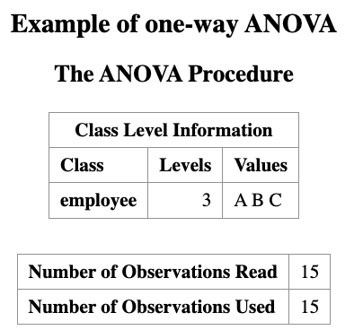
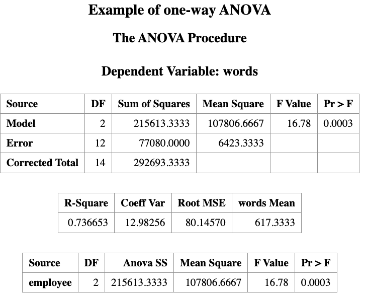
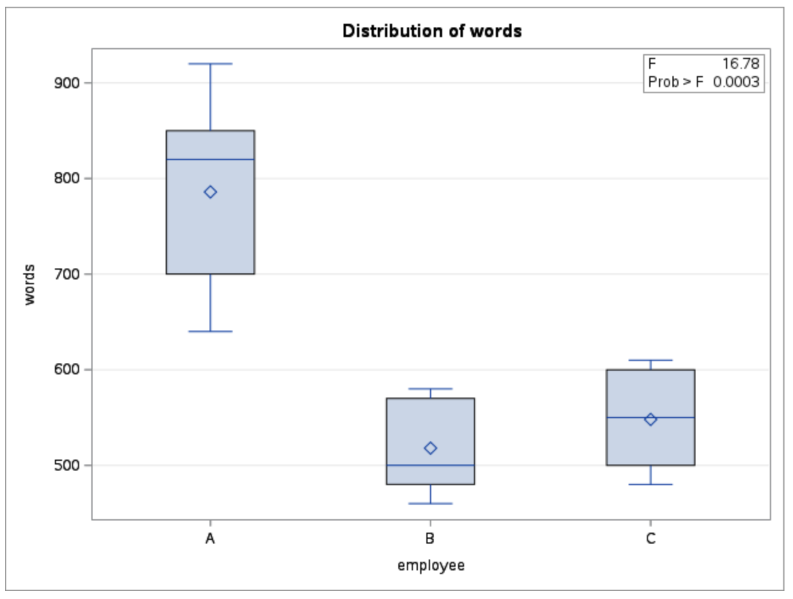
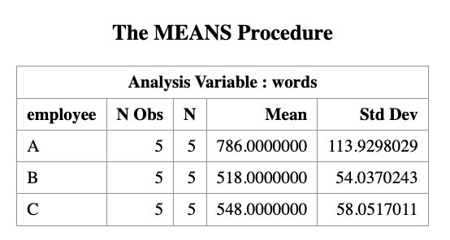
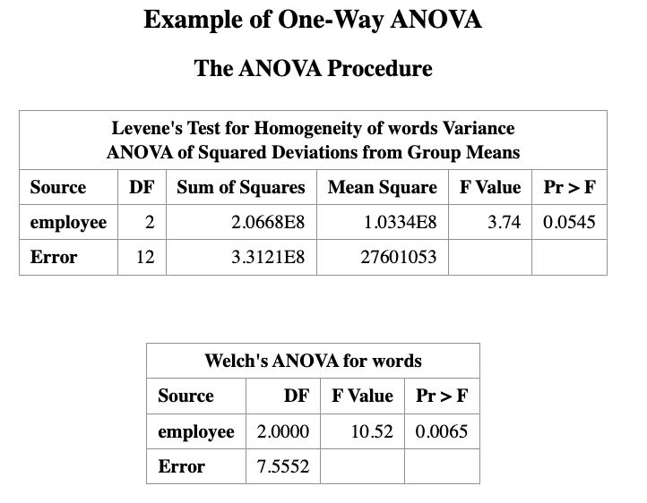
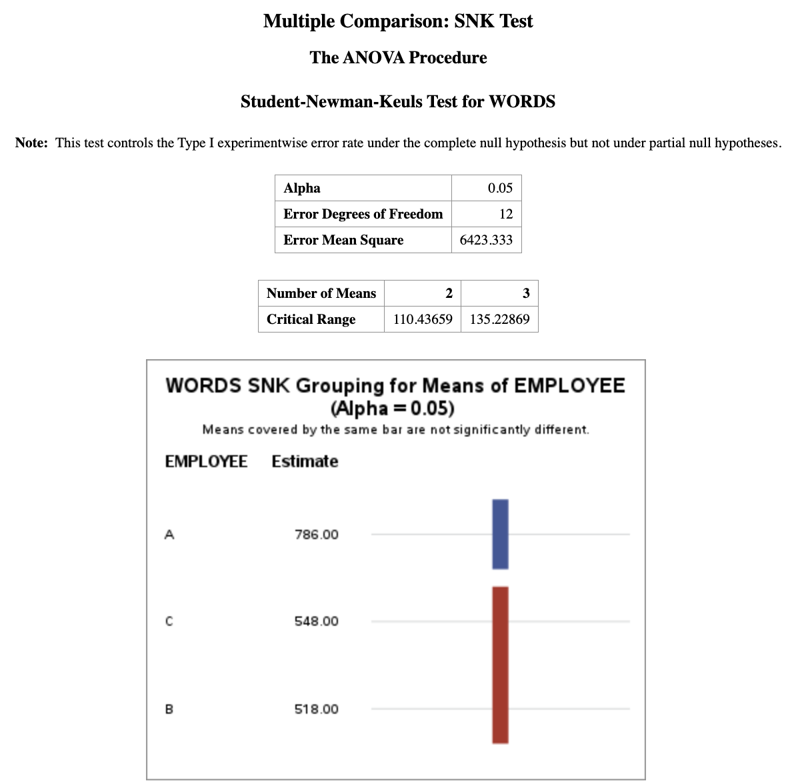

13 Analysis of Variance
Learning Objectives
- Understand what ANOVA (Analysis of Variance) is.
- Explain why and when ANOVA is needed.
- Recognize the connection between two-sample t-tests and one-way ANOVA.
- Formulate ANOVA models and hypotheses.
- Perform one-way ANOVA in SAS and interpret the output.
13.1 Introduction
In the previous lecture, we studied the two-sample t-test, where the goal was to compare the means of two independent populations.
Recall the equal-variance two-sample model: \[ \begin{aligned} X_{1i} &\stackrel{iid}{\sim} N(\mu_1, \sigma^2), \quad i = 1, \ldots, n_1, \\ X_{2j} &\stackrel{iid}{\sim} N(\mu_2, \sigma^2), \quad j = 1, \ldots, n_2, \end{aligned} \tag{13.1}\] with inference focused on the mean difference \[ \mu_1 - \mu_2. \]
The corresponding hypothesis test was: \[ H_0: \mu_1 = \mu_2. \]
13.1.1 From Two-Sample t-Test to ANOVA
A natural question arises:
What if we want to compare more than two population means?
For example:
- Comparing test scores across three or more teaching methods
- Comparing average yields across multiple fertilizer types
- Comparing mean response times across several algorithms
Running multiple pairwise \(t\)-tests is not appropriate, because:
- It inflates the Type I error rate
- It leads to inconsistent inference
This motivates the need for ANOVA.
13.2 ANOVA as a Generalization of the Two-Sample \(t\)-Test
To unify the two-sample setting, we can rewrite the data using an indicator variable.
Let the combined data be: \[ \{(I_{i,2}, X_i)\}_{i=1}^{n_1+n_2}, \] where \[ I_{i,2} = \begin{cases} 1, & \text{if observation } i \text{ comes from group 2}, \\ 0, & \text{otherwise}. \end{cases} \]
Then the two-sample model can be written as a linear model: \[ X_i = \alpha + \beta_1 I_{i,2} + \varepsilon_i,\quad \varepsilon_i \stackrel{iid}{\sim} N(0, \sigma^2). \tag{13.2}\]
Here, note that models Equation 13.1 and the linear model Equation 13.2 are equivalent. Specifically:
- \(\alpha=\mu_1\), represents the mean of group 1. This is referred as the baseline effect
- \(\beta_1 = \mu_2 - \mu_1\), this is the group effect, representing the difference between group 2 and group 1.
- Testing \(\mu_1 = \mu_2\) is equivalent to testing: \[ H_0: \beta_1 = 0 \]
Note, we can also write the model in terms of group 2, and use it as the baseline group. In this case, \(\beta_1\) is the difference effect form group 1, and the null hypothesis would be \(H_0: \beta_1 = 0\) as well.
13.3 ANOVA Analysis: Compare Multiple Mean Values
Now, we see how to extend Equation 13.2 to compare the population mean from multiple groups. Suppose now we have \(K > 2\) groups.
The previous model Equation 13.2 can be extended to compare the population mean across multiple groups (more than two).
Suppose we have three groups (1, 2, 3) and choose group 1 as the baseline.
An extension of the model is
\[ X_i = \alpha + \beta_1 I_{i,2} + \beta_2 I_{i,3} + \epsilon_i \]
where
- \(I_{i,2}\) indicates whether the observation belongs to group 2
- \(I_{i,3}\) indicates whether the observation belongs to group 3
The parameters have the interpretation
\[ \alpha = \mu_1 \]
\[ \beta_1 = \mu_2 - \mu_1 \]
\[ \beta_2 = \mu_3 - \mu_1 \]
Thus, statistical inference on \(\beta_1\) and \(\beta_2\) allows us to determine whether the group means differ.
This type of analysis is known as Analysis of Variance (ANOVA).
13.3.1 When Do We Use ANOVA?
In general, ANOVA is used under similar assumptions as the two-sample t-test.
- If the independent variable has two levels, both
- a two-sample t-test, and
- ANOVA
can be used.
- a two-sample t-test, and
- If the independent variable has three or more levels,
ANOVA is required.
Suppose three reading instruction methods (A, B, C) are given to 15 subjects.
After instruction, a reading test is administered, and the number of words per minute is recorded.
The goal is to test whether the instruction methods lead to different reading scores.
13.3.2 Hypothesis Test
Global test
The ANOVA test examines whether any group means differ.
Our null hypothesis is: \[ H_0: \mu_1 = \mu_2 = \mu_3. \]
This means, there is no differences among group means.
The alternative Hypothesis is: \[ H_1: \text{At least one pair of means is different} \]
\[ (\mu_1 \ne \mu_2 \;\text{or}\; \mu_1 \ne \mu_3 \;\text{or}\; \mu_2 \ne \mu_3) \]
After the Global Test
If the ANOVA test shows the null hypothesis is rejected, it tells us that a difference exists, but it does not tell us where the difference occurs.
Therefore, additional tests are performed to determine which groups differ.
These are called multiple comparison procedures.
Examples include:
- Tukey’s HSD
- Bonferroni correction
- Scheffé test
13.4 ANOVA in SAS
DATA words;
INPUT words employee $;
DATALINES;
700 A
850 A
820 A
640 A
920 A
480 B
460 B
500 B
570 B
580 B
500 C
550 C
480 C
600 C
610 C
;
RUN;
PROC ANOVA DATA=words;
TITLE Example of one-way ANOVA;
CLASS employee;
MODEL words = employee;
MEANS employee / HOVTEST=WELCH;
RUN;
PROC MEANS DATA=words N MEAN STD;
CLASS employee;
VAR words;
RUN;In the code chunk above:
The
MEANSstatement generates the group mean values of the dependent variable (words).The option
HOVTESTis used to check the homogeneity of variance assumption across groups.The option
WELCHperforms Welch’s ANOVA, which is more appropriate when the equal variance assumption is violated.More details about assumption checking will be discussed below.




13.4.1 Interpretation of the outputs
Based on the data, we conduct a hypothesis test (with a 0.05 significance level) to determine whether the three instruction methods have different effects on the reading result.
The ANOVA output contains a table labeled Source, which shows the sources of variation in the data.
The term Model represents the effect of the independent variable (in this example, the instruction method).
One-way ANOVA is based on the F-distribution.
The computed F-statistic is 16.78, with a p-value of 0.0003.
Since the p-value < 0.05, we reject the null hypothesis.
Therefore, we conclude that the reading instruction methods do not all produce the same mean word counts. In other words, at least one instruction method differs from the others.
Alternatively you can turn the ODS GRAPHICS on to get the diagnostic plots for ANOVA assumptions.
ODS GRAPHICS ON;
PROC ANOVA DATA=words;
CLASS employee;
MODEL words = employee;
MEANS employee;
RUN;
ODS GRAPHICS OFF;13.4.2 Assumption Validation for the ANOVA Test
The ANOVA test assumes that:
The dependent variable (
word) is continuous, and the independent variable (method) is categorical.The experiment follows a random and independent design.
For example, the same person should not be tested under all three instruction methods, since that would create a dependent (repeated-measures) design.The samples (word counts from the three instruction methods) are normally distributed and have equal variances.
The normality assumption can be checked using the PROC UNIVARIATE procedure.
It is important to note that ANOVA is relatively robust to mild departures from normality, especially when sample sizes are similar.
The assumption of equal variances (homogeneity of variances) can be checked using the HOVTEST option in the MEANS statement:
MEANS method / HOVTEST=WELCH;The result is what we have seen before,

As shown in the output, the p-value from Levene’s test is 0.0545, which is close to the significance level of 0.05. Therefore, the result lies near the borderline.
Two interpretations are possible:
If we use a significance level of 0.05, there is insufficient evidence to reject the null hypothesis of homogeneity of variances.
If a larger significance level is used (for example 0.10), we would reject the homogeneity assumption. In that case, the Welch ANOVA test should be used instead.
Recall that:
- The p-value from the regular ANOVA (assuming equal variances, i.e., homogeneity) is 0.0003.
- The p-value from Welch’s ANOVA (not assuming equal variances, heterogeneity) is 0.0065.
At the 0.05 significance level, both tests lead to the same conclusion:
the instruction methods have different effects on the reading results.
13.5 Multiple Comparison
In general, methods used to identify which group means differ after a significant global ANOVA test are called multiple comparison tests or post hoc tests.
SAS provides several procedures to investigate differences between levels of the independent variable. Examples include:
- Duncan’s multiple-range test (
DUNCAN) - Student–Newman–Keuls multiple-range test (
SNK) - Least significant difference test (
LSD) - Tukey’s studentized range test (
TUKEY) - Scheffé’s multiple-comparison procedure (
SCHEFFE)
To request a multiple comparison test in SAS, place the desired test option after a slash (/) in the MEANS statement.
It is convenient to include the multiple comparison request at the same time as the global ANOVA test. However, the results of multiple comparisons should only be interpreted after the global ANOVA test indicates a significant difference among group means.
The following SAS code performs the SNK multiple comparison test at a significance level of 0.05:
PROC ANOVA DATA=words;
TITLE "Multiple Comparison: SNK Test";
CLASS EMPLOYEE;
MODEL WORDS = EMPLOYEE;
MEANS EMPLOYEE / SNK ALPHA=0.05;
RUN;
Under the SNK grouping column, groups that share the same letter are not significantly different.
For example, groups C and B both have the letter “B” in the grouping column, indicating that their means are not significantly different.
Group A has the letter “A”, meaning that its mean is significantly different (p-value < 0.05) from the means of groups B and C.
Conclusion:
method A performs significantly better than methods B and C, while methods B and C are not significantly different from each other.
The two-sample t-test is a special case of ANOVA when there are only two groups.
ANOVA tests whether at least one group mean differs among multiple groups using the F-statistic.
Before interpreting ANOVA results, we should check assumptions, especially homogeneity of variances (e.g., using Levene’s test).
If the equal variance assumption is violated, Welch’s ANOVA provides a more robust alternative.
If the global ANOVA test is significant, post-hoc multiple comparison tests (e.g., SNK, Tukey, LSD) are used to determine which groups differ.